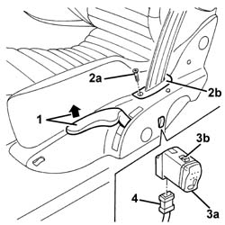

7045M10 front seat heating system switch - r+r
- Path
- Procedures > 70 FITTINGS > 7045 FRONT SEATS > 7045M front seat handling > 7045M10 front seat heating system switch - r+r
- Kind
- repair procedure (removal / refitting; the operation number is the code)
- Applies to
- engines: 3.2 V6; all production periods
- Interactive page
- https://sloeber94.github.io/elrnDB-a156/en/#/3238905
Applies to: engines: 3.2 V6; all production periods; only with equipment: GTA
 Removing
Removing
 Refitting
Refitting1. Lift up the seat completely using the lever.
2. Undo the bolt (2a) and release the trim (2b).
3. Working from the inside, via the trim housing (2b), remove the switch (3a) releasing the retainers (3b).
4. Disconnect the electrical connection and keep the heater pad switch.

Applies to: engines: 3.2 V6; all production periods; only with equipment: GTA
Refitting
RemovingCheck that the heater pad switch is not damaged.
Connect the electrical connection
Fit the switch engaging the retainers.
Attach the trim and tighten the bolt.
Lower the seat.
Test the device is working properly.